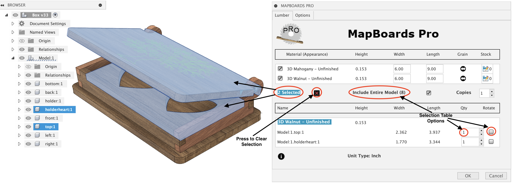

Selection Support
By default, all component bodies are included in the created map. Alternatively, you can select which components you want included in the map.
Selecting components can be useful in two very important ways. You can modify how specific components are handled when MBP creates a map such as rotation and quantity used for duplication. You can also use component selection to pick which components you want to be mapped and not the entire model enabling the creation of subgroups.
Once MapBoards Pro is running, select one or more components from the browser tree or in the design view. The selected components will be displayed in a selection table below the Board Type list.
The selections made are remembered between invocations of MBP . This includes the related options, quantity and rotation.
The following example shows two components selected of type Walnut, allowing their quantities and grain direction to be changed while still including the entire model in the created map.

{kind=link}
In addition, you can select a board type from the list presented by MBP in the Lumber tab. The following image shows the board type Mahogany Unfinished (0.152) selected, adding 2 additional components to the previous selection for a total of 4 selected components. All selected components are highlighted in the 3D model.
{kind=link}
Once individual components have been selected, the following options are available which affect how the map is created:
Include Entire Model - When enabled the map created will include all components in the model along with modifications made to the selected items. When disabled only the selected components are included.
Quantity - The selected item’s number of copies can be increased from the default of one. You can also set the quantity to zero to omit a component.
Rotate - When selected, the component will be rotated with its long edge perpendicular to the targeted board’s grain direction.. The component grain direction is determined by either the longest dimension or, if a 3D appearance has been applied and the Automatic Grain Alignment option is enabled, the visual grain. This is a forced rotation, as opposed to the discretional rotation employed by MBP when the option Can Rotate is set.